Use carbonyl addition as the starting pattern. Today we ask what makes a tetrahedral species collapse, how proton transfers enable leaving groups, and why amides differ.
Retrieve the starting idea
Draw CH₃CHO and CH₃COOCH₃. Which one has an oxygen-based substituent directly attached to acyl carbon?
Locate the shared carbonyl
Carboxylic acid derivatives share an acyl carbon
Which directly bonded group distinguishes acid, ester and amide?
Apply: locate the shared carbonyl
Classify CH₃CONHCH₃ and CH₃COOCH₃.
Distinguish ester from ether
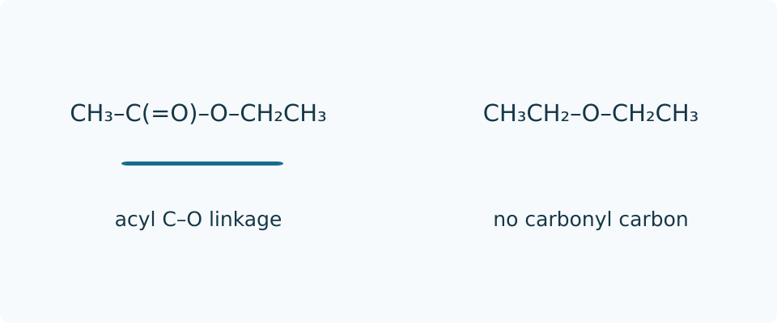
An ester contains an adjacent carbonyl; an ether does not
Which carbon can accept a nucleophile by carbonyl addition?
Resolve: distinguish ester from ether
An ester contains an adjacent carbonyl; an ether does not
The ester has an electron-poor carbonyl carbon; the ether has no C=O at that site.
Apply: distinguish ester from ether
Circle the ester linkage in HCOOCH₂CH₃.
Give the oxygens identities
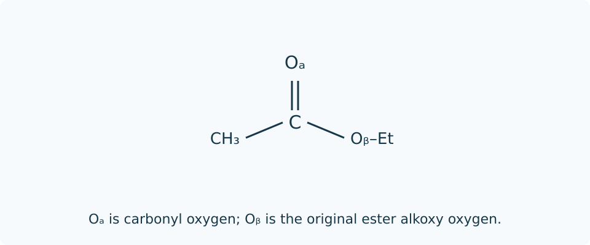
Atom labels preserve oxygen identity during hydrolysis
If hydroxide attacks, which oxygen initially becomes O⁻?
Resolve: give the oxygens identities
Atom labels preserve oxygen identity during hydrolysis
The original carbonyl oxygen Oₐ gains the carbonyl pi pair. The original alkoxy oxygen Oᵦ remains bonded to ethyl.
Apply: give the oxygens identities
Label incoming hydroxide oxygen O꜀. Where is its H after addition?
Find both electron sources
Addition starts by moving the carbonyl pi pair to oxygen
Identify the tail of each curved arrow before naming products.
Resolve: find both electron sources
Addition starts by moving the carbonyl pi pair to oxygen
One arrow starts at the nucleophile pair and one at C=O π. Their coordinated movement avoids five bonds at carbon.
Apply: find both electron sources
Repair an ester-addition drawing that retains C=O.
Audit the intermediate
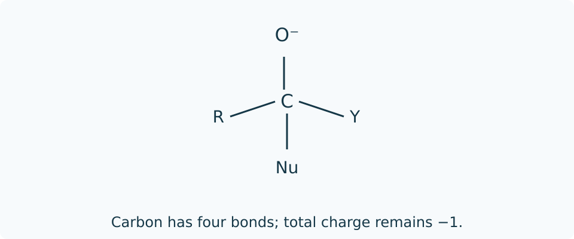
The tetrahedral intermediate has four single bonds
Count carbon bond orders and locate the net charge.
Resolve: audit the intermediate
The tetrahedral intermediate has four single bonds
Carbon has four single bonds. For an anionic incoming nucleophile, charge moves to original carbonyl oxygen.
Apply: audit the intermediate
Does the negative charge disappear when Nu⁻ bonds?
Apply the pattern to ethyl ethanoate
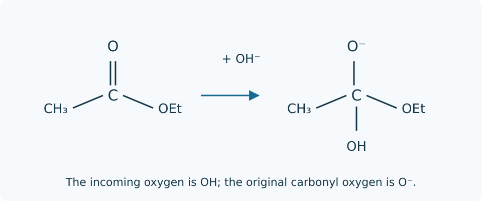
Hydroxide addition opens the ester carbonyl
Write the intermediate after OH⁻ addition, keeping the ethoxy group intact.
Resolve: apply the pattern to ethyl ethanoate
Hydroxide addition opens the ester carbonyl
The intermediate is CH₃C(O⁻)(OH)(OEt). Incoming OH is neutral after bonding; the original carbonyl O is O⁻.
Apply: apply the pattern to ethyl ethanoate
Expand Et and identify which oxygen has three lone pairs.
Choose a collapse pathway
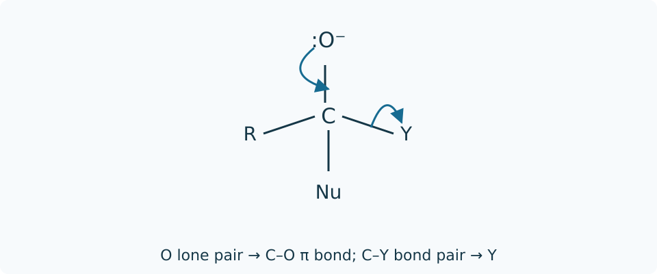
Collapse reforms the carbonyl and releases a leaving group
Which pair reforms the carbonyl, and which bond pair leaves?
Resolve: choose a collapse pathway
Collapse reforms the carbonyl and releases a leaving group
O⁻ donates a pair into C–O π; the C–Y bonding pair moves to Y. The carbonyl reforms without a free acyl cation.
Apply: choose a collapse pathway
Would the same drawing justify loss of H⁻ from an aldehyde?
Pause before calling products final
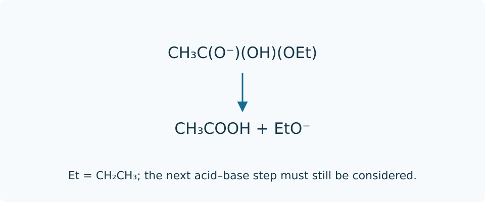
Collapse first gives acid and alkoxide
What acid and base coexist immediately after this collapse?
Resolve: pause before calling products final
Collapse first gives acid and alkoxide
The elementary collapse gives CH₃COOH and EtO⁻ in this simple scheme. They can undergo a strongly favoured proton transfer.
Apply: pause before calling products final
Compare pKa 4.8 for acid and 16 for EtOH. Which pair is favoured?
Track the last proton transfer
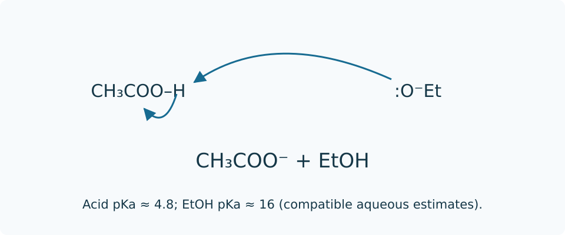
The alkoxide accepts the carboxylic acid proton
Follow the acid H and the pair formerly in its O–H bond.
Resolve: track the last proton transfer
The alkoxide accepts the carboxylic acid proton
EtO⁻ accepts H. The acid O–H pair stays on carboxylate O. Products are CH₃COO⁻ and EtOH.
Apply: track the last proton transfer
Estimate K using 10^(16 − 4.8). Is base regenerated overall?
Write the base-promoted net equation
Base-promoted ester hydrolysis traps the carboxylate
Which species should appear in a basic mixture: carboxylic acid or carboxylate?
Apply: write the base-promoted net equation
Balance CH₃COOCH₃ + OH⁻ products.
Separate reaction from work-up
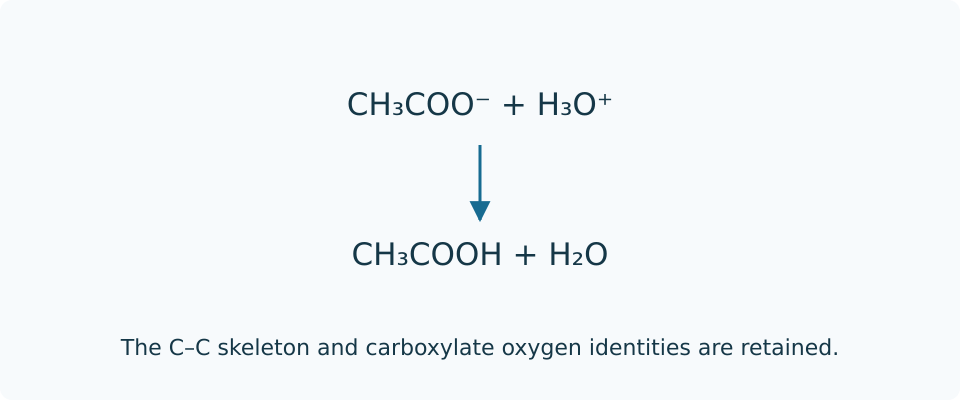
Work-up changes protonation state
What changes when hydronium is added to the carboxylate?
Apply: separate reaction from work-up
Write CH₃COO⁻ + H₃O⁺ with products and charges.
Compare net and elementary descriptions
Acyl substitution replaces Y while retaining a carbonyl
Which bond is replaced overall, and which temporary intermediate is hidden?
Apply: compare net and elementary descriptions
Is one net reaction arrow evidence for one elementary step?
Activate the acid carbonyl
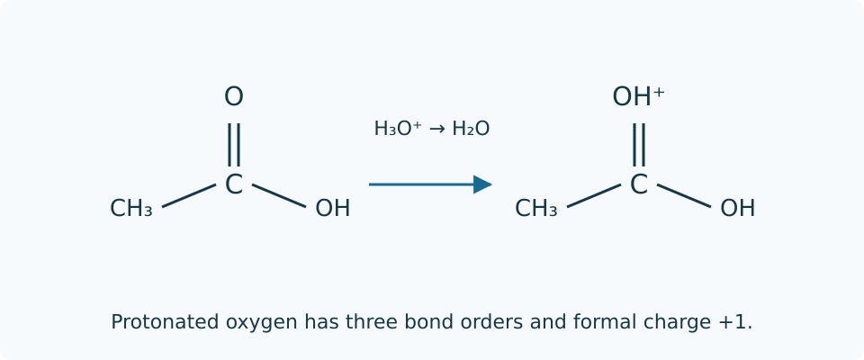
Acid activation protonates carbonyl oxygen
Which atom is protonated first in the representative acid-catalysed pathway?
Resolve: activate the acid carbonyl
Acid activation protonates carbonyl oxygen
Carbonyl oxygen accepts H⁺ from a donor such as hydronium, increasing carbon electrophilicity. The protonated oxygen has +1 charge.
Apply: activate the acid carbonyl
Count oxygen bond orders in C=OH⁺.
Let a neutral alcohol attack
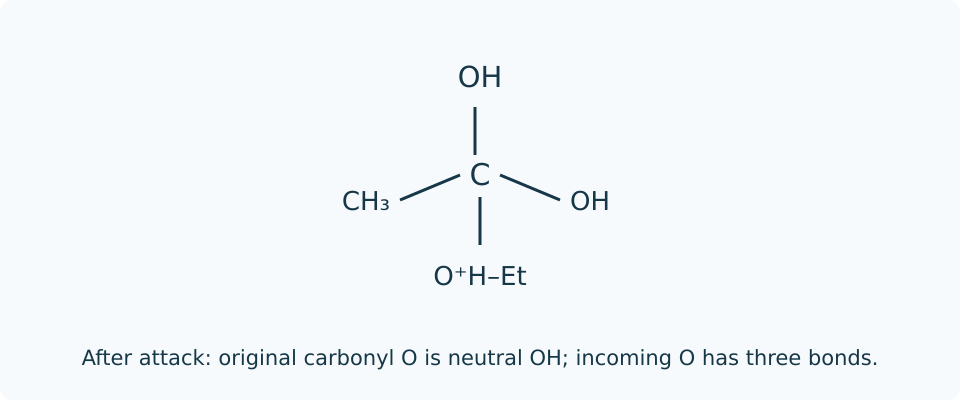
Neutral ethanol adds to the activated acyl carbon
After ethanol attacks activated carbonyl, where is the positive charge?
Resolve: let a neutral alcohol attack
Neutral ethanol adds to the activated acyl carbon
The incoming ethanol oxygen has three single bonds and is positive. Original carbonyl O becomes neutral OH.
Apply: let a neutral alcohol attack
Write the tetrahedral species from protonated ethanoic acid and ethanol.
Make the incoming oxygen neutral
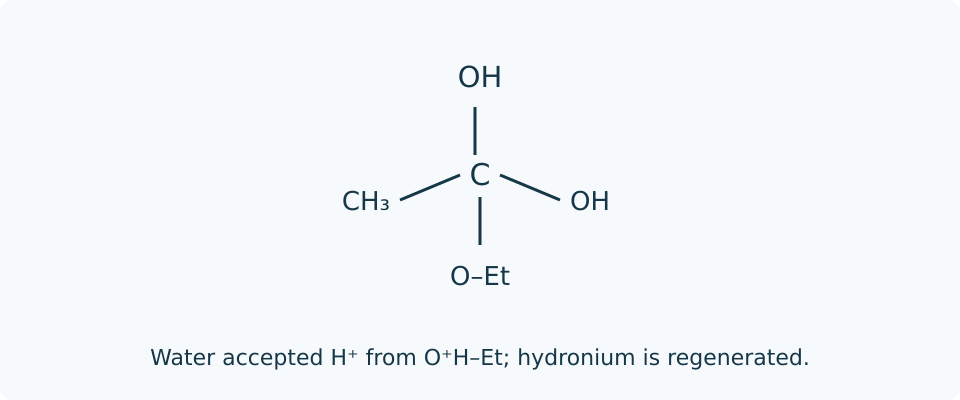
Deprotonating the incoming oxygen gives a neutral tetrahedral species
What proton transfer makes OEt a neutral substituent?
Resolve: make the incoming oxygen neutral
Deprotonating the incoming oxygen gives a neutral tetrahedral species
Water removes H from O⁺HEt, leaving OEt with two bonds. This step regenerates hydronium.
Apply: make the incoming oxygen neutral
Does this neutral tetrahedral drawing already contain a good leaving group?
Create a viable leaving group
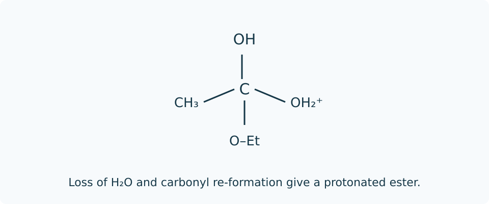
Protonating an OH creates a water leaving group
Which attached group can now leave as a neutral molecule?
Resolve: create a viable leaving group
Protonating an OH creates a water leaving group
The protonated OH₂⁺ group can leave as water while another oxygen pair reforms C=O. The first carbonyl product is protonated.
Apply: create a viable leaving group
Name the final step restoring neutral ester and catalyst.
Interpret the equilibrium separately from catalysis
Acid-catalysed esterification is an equilibrium
How could the ester proportion change without changing the catalyst?
Apply: interpret the equilibrium separately from catalysis
Does adding a catalyst alone change equilibrium K at fixed conditions?
Explain amide rotation and reactivity
Amide nitrogen donates into the carbonyl
What does the contributor with C=N imply about the real C–N bond?
Apply: explain amide rotation and reactivity
Audit charges in CH₃C(O⁻)=NH₂⁺.
Distinguish proton transfer from coupling
Acid plus amine first gives an ammonium carboxylate salt
What immediate product should be expected from acid plus amine in water?
Apply: distinguish proton transfer from coupling
Explain why two amino acids meeting in water is insufficient for rapid peptide formation.
Transfer the acyl motif to biological structures
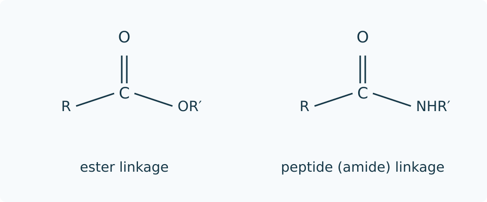
Biological ester and amide links share an acyl motif
Which bond is ester-like in a lipid and amide-like in a peptide?
Apply: transfer the acyl motif to biological structures
Where would initial nucleophilic acyl attack occur in either motif?
Integrate one short case
A student stops base-promoted ethyl-ethanoate hydrolysis at CH₃COOH + EtO⁻. Write the missing step and the form obtained after acid work-up.
Compare the worked reasoning
EtO⁻ deprotonates the acid to give CH₃COO⁻ + EtOH. Acid work-up later protonates carboxylate to CH₃COOH.
Exit explanation
Why does a carbonyl alone not guarantee acyl substitution?